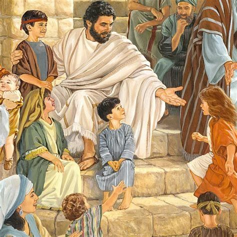
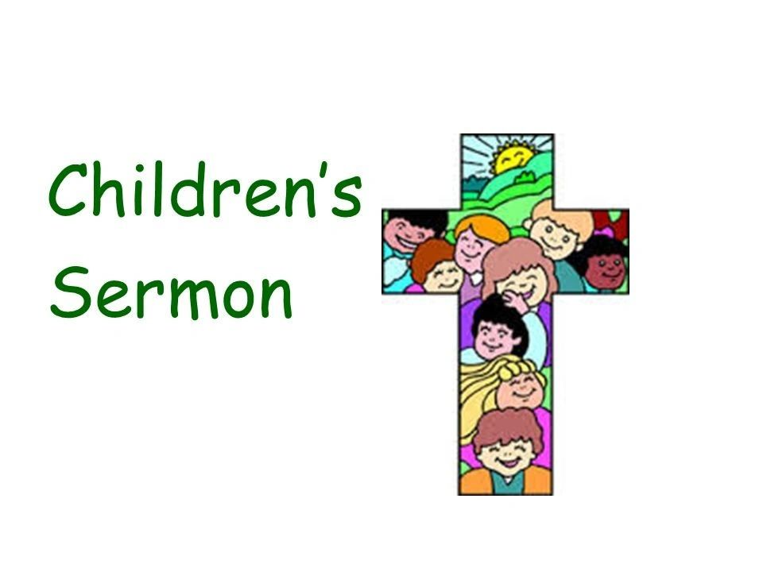
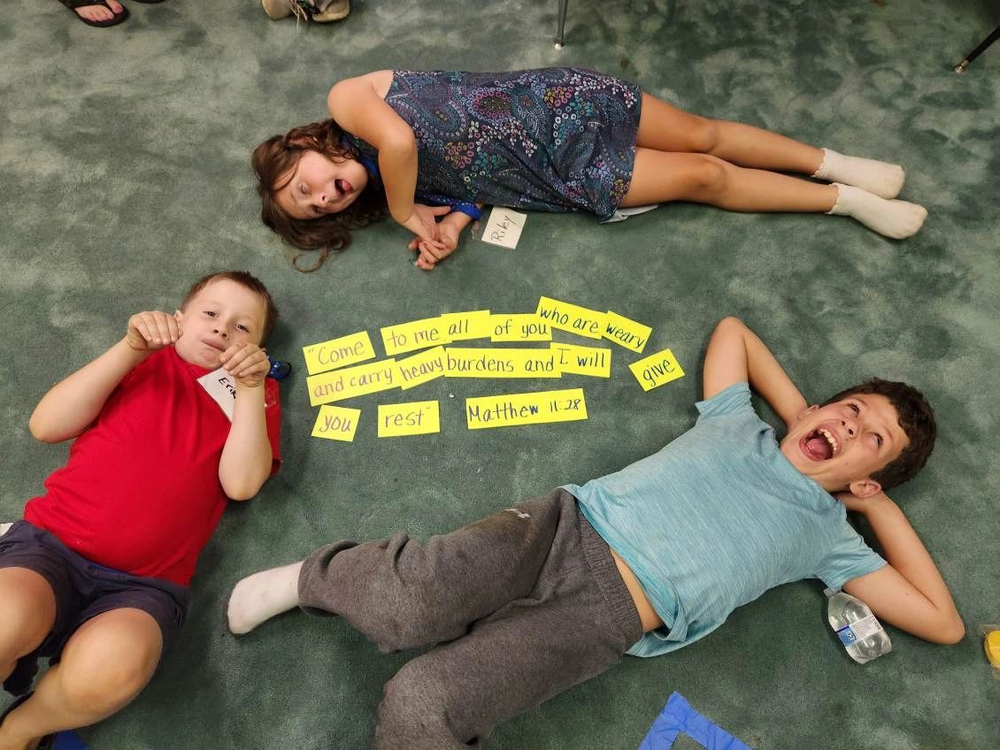
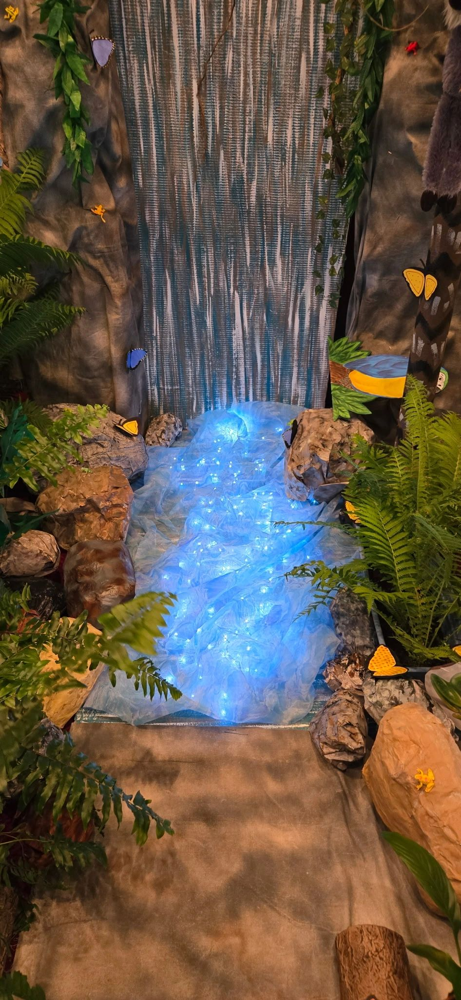
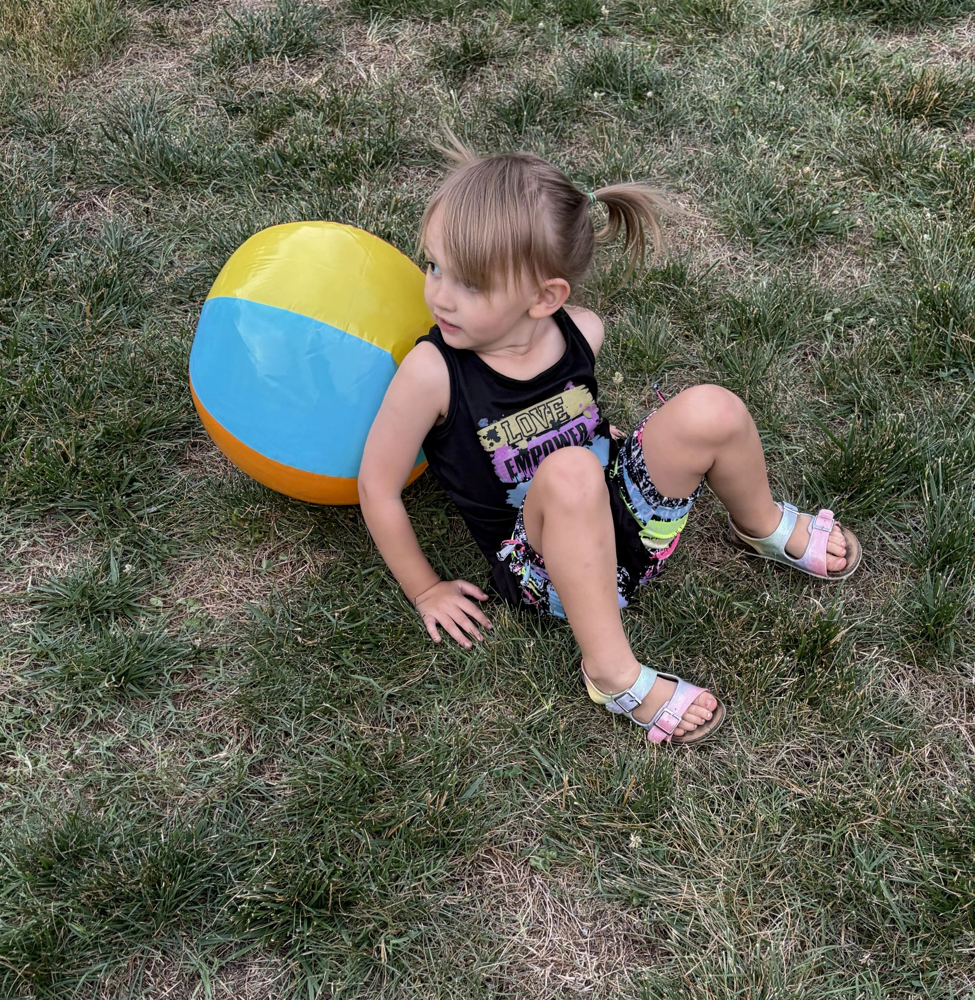

"jesus said, 'Let the little children come to me, and do not hinder them, for the kingdom of heaven belongs to such as these.'”
Matthew 19:14

Ministries for Children and Youth
"Sonshine" Ministry - Children's Church - during Sunday service
This 35 minute class designed for elementary school age kids
offers:
Bible Story lesson that follows scripture from that week's sermon
Crafts
Games
Play Time
Children's Sermon

The children’s sermon is a short message for the kids that takes place partway through the service and presents the week’s message in a fun, interactive way for kids. Adults will enjoy it too and can learn from it as well.
Children's Sunday School
Kids’ Sunday school teaches Bible stories, Christian values, prayer, and simple lessons about Jesus in an age-appropriate way. It includes crafts, games, memory verses, and a short lesson to help kids understand faith in a fun, welcoming setting.

Vacation Bible School
PRCC offers VBS every summer. Our heart is to help children connect with their Heavenly Father and His Son, Jesus, who loves them deeply and desires a relationship with them. We do this through interactive games, Bible teaching, crafts, food, fellowship, and plenty of fun and laughter. Our curriculum comes from Group Publishing and is typically held for four evenings from 6:30–8:30 p.m. See below for examples of past sessions.
Scuba - Diving into friendship with God
Scuba VBS is a vacation Bible school program themed around an undersea adventure, focusing on teaching children about friendship with God.
True North - Alaskan adventure
True North VBS is an Alaskan adventure that guides kids to discover how Jesus is their faithful friend in a wild world
Rainforest Falls - Exploring the True Nature of God
Rainforest Falls VBS Show kids what it means to be rooted in relationship with God, their safe place in life’s storms.
Rainforest Falls - VBS 2026

